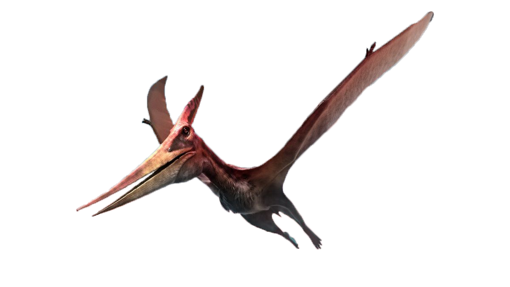

Детальніше про цього динозавра
Птерозаври (Pterosauria) — вимерлий ряд плазунів мезозойської ери, що освоїли повітряне середовище проживання. Вони жили 210—65,5 млн років тому, одночасно з динозаврами і морськими ящерами. У наш час виділяють близько 60 родів птерозаврів, що об'єднуються в 16 родин. Знахідки птерозаврів украй рідкісні через погане збереження скелету. Анатомія птерозаврів значно відрізнялася від їх предків рептилій завдяки адаптації для польоту. Кістки птерозавра були порожніми та заповнені повітрям, так само як і кістки птахів. Вони мали кіль грудної клітини, яка була розвинена для посилення польотних м'язів і збільшений мозок який свідчить про функції пов'язані з польотом[4]. В деяких пізніших птерозаврів, хребетні кістки за плечима зрослися в структуру, що відома як notarium, що додавала жорсткості тулуба під час польоту, і забезпечувала надійну підтримку лопаткам (плеча).
